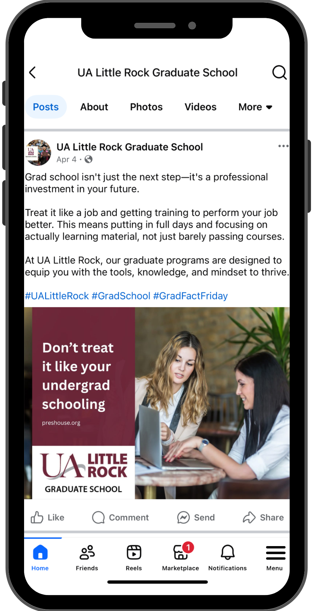

Hannah Darden
Social Media Campaign:
UA - Little Rock Grad School
Creative Process and Strategy:
- Wrote all post copy for recurring themes:
- #MotivationMondays
- #WellnessWednesdays
- #GradFactFridays
- Designed simple, cohesive static images to complement each post
- Planned a semester-long content calendar to ensure variety and relevance
- Maintained a steady posting schedule, publishing most Mondays, Wednesdays, and Fridays
- Focused on consistency to boost audience engagement and strengthen the Graduate School’s online presence

Fig Caption Here
Skills Used and Learned
- Social media copywriting
- Content planning
- Campaign strategy
- Graphic Design
Results:
- Sustained the Graduate School’s social media presence with regular, reliable posting throughout the semester
- Reinforced brand identity by establishing recognizable weekly post themes
- Provided ongoing motivational, wellness, and informational content for graduate students, contributing to a supportive online environment